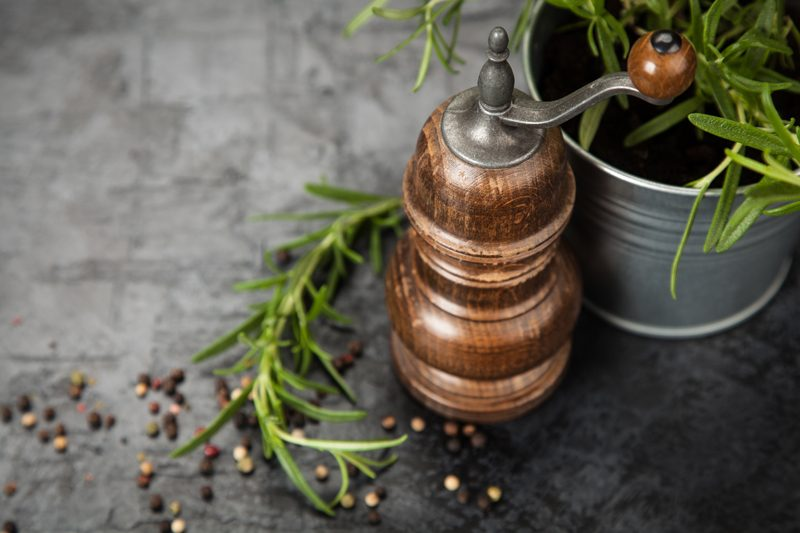
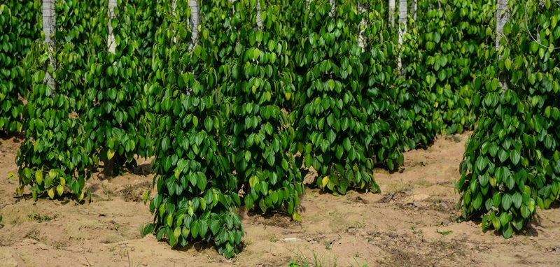
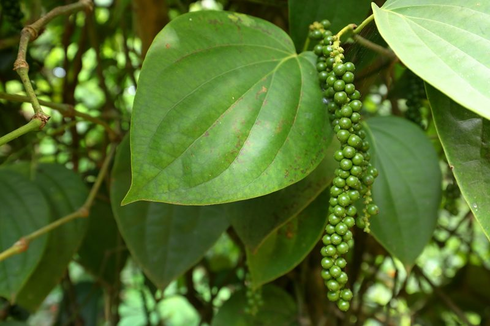

Black Pepper – Known as King of the Spices
I can’t say that I have many memories of spices as I was growing up but black pepper does stand out. I was just a little girl, small enough to sit on the floorboard of the car… back in the day when seatbelts weren’t used (the horror). Mom and I were on a long road trip and we swung into McDonald’s for some traveling food (the horror once again). As I repositioned myself on the floorboard, I moved my coloring book and crayons out of the way to spread out my Happy Meal.

In the bottom of the bag, I found a little package of salt and black pepper. I opened the salt and sprinkled it on my fries. I wasn’t too familiar with the other package, but I tore it open and took a deep sniff. Within seconds, I was sneezing like crazy. Each sneeze made me giggle, and each giggle made me sniff more black pepper. That was the highlight of our trip. I am going to advise against sniffing black pepper.
Whereas most spices live tucked away in dark cupboards, black pepper proudly demands prime real estate on the kitchen counter housed in anything from plain Jane to fancy shakers and grinders. Do you know where that pepper actually comes from (besides the grocery store)? Today, global black pepper consumption is estimated to be about 400,000 tons per year. This prized spice stimulates salivation and the production of gastric juices and is a revered food flavoring throughout the world.

What is black pepper and where does it come from?
Black peppercorns grow on the Piper nigrum L. vine, mainly around the Equator in India, Indonesia, Sarawak, Malaysia, and Brazil. The vines can grow up to 30 feet, therefore they are either staked or they may attach itself to nearby trees for support. They’re picked when still green on the vine, and turn black when oxidized during the drying process. They are actually the fruits of a flowering vine in the Piperaceae family. The green, wide-leafed vines grow long tendrils where cylindrical clusters (drupe of the vine (a fruit with a single seed) of the berries ripen. The fruits are picked at varying degrees of ripeness depending on the strength and type of pepper desired and then processed accordingly.
Pepper gets their telltale spicy heat mostly from piperine derived both from the outer fruit and the seed. Once ground, pepper’s aromatics can evaporate quickly. It is recommended to grind whole peppercorns immediately before use for this reason. Handheld pepper mills or grinders, which mechanically grind or crush whole peppercorns, are used for this.

Harvesting
A pepper plant takes four years to mature but can be harvested for seven years afterward. If the berries were allowed to ripen fully, they would turn red but instead, they are usually harvested when they are green. Harvesting is typically done without any mechanical equipment. I will go a bit deeper into this stage down below.
The Different Colors of Pepper
The peppercorn plant is a tropical plant cultivated for its black, white and red peppercorns. The three colors of peppercorn are simply different stages of the same peppercorn. Black peppercorns are the dried immature fruit or drupes of the peppercorn plant while white pepper is made from the inner portion of the mature fruit. Some people mistakenly group pink peppercorns in here, but pink peppercorns, originating in Peru, have no relation to black pepper. (1)
Black Peppercorns
- Black pepper is produced from the still-green, unripe drupes of the pepper plant.
- Once harvested, they are dried by either the sun or a machine.
- If sun-dried the berries are spread on large platforms to dry in the sun over a period of about a week and a half.
- In their dried state, the green berries blacken to become the peppercorns we use in pepper mills. Click (here) to watch a quick video on this process. (I would mute your speakers as the music is sort of jarring)
- Keep in mind that there are different techniques used when it comes to harvesting and preparing the peppercorn for retail, but what I am about to share will give you a basic idea.
White Peppercorns
- They are only the seeds of the dried, ripe fruits, with the darker-colored skin of the pepper fruit removed.
- This is usually accomplished by a process known as retting, where fully ripe red pepper berries are soaked in water for about a week, during which the flesh of the pepper softens and decomposes.
- Rubbing then removes what remains of the fruit, and the naked seed is dried.
- Sometimes alternative processes are used for removing the outer pepper from the seed, including removing the outer layer through mechanical, chemical, or biological methods.
Green Peppercorns
- They are dried, unripe fruits that been preserved through sulfur dioxide, canning or freeze-drying, in order to preserve their color and flavor.
- Pickled peppercorns, also green, are unripe drupes preserved in brine or vinegar.
- Fresh, unpreserved green pepper drupes, largely unknown in the West, are used in some Asian cuisines, particularly Thai cuisine.
- Their flavor has been described as spicy and fresh, with a bright aroma. They decay quickly if not dried or preserved.
Red Peppercorns
- The pepper berries can be picked just as they begin to turn red.
- They are plunged into boiling water for approximately 10 minutes, and they turn black or dark brown in an hour.
- The peppercorns are spread in the sun to dry for three to four days before they are taken to the factory to be ground.
- This process is quicker than air drying alone but requires the added step of the boiling water bath. (2)
There is so much to learn about our food source and I am so thankful that we have the resources at our fingertips to learn where and how they end up in our grocery stores. I hope you enjoyed this little snippet regarding black pepper. blessings, amie sue
© AmieSue.com